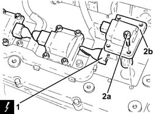

5510C18 RIGHT HAND CYLINDER HEAD IGNITION COIL - R+R
- Path
- Procedures > 55 ELECTRICAL EQUIPMENT > 5510 ENGINE IGNITION > 5510C COIL, ECU, SENSORS > 5510C18 RIGHT HAND CYLINDER HEAD IGNITION COIL - R+R
- Kind
- repair procedure (removal / refitting; the operation number is the code)
- Applies to
- engines: 3.2 V6; all production periods
- Interactive page
- https://sloeber94.github.io/elrnDB-aGt/en/#/125001607
Applies to: engines: 3.2 V6; all production periods
 Removing
Removing
 Refitting
RefittingEnsure that the ignition key is in the OFF position, then disconnect the negative battery terminal (-).
Name | Connector | |
|---|---|---|
- | Battery | See A1B BATTERY ( BATTERY NEGATIVE ) |
Proceed with removal
Op. 1072B50 SLEEVES CONNECTING AIR CAPACITY BOX TO INLET MANIFOLD IS - R+R
1. Disconnect the electrical connections from the right cylinder head ignition coils.
2. Undo the bolts (2a) and remove the ignition coils (2b) from the right cylinder head.
Name | Connector | |
|---|---|---|
1 | Ignition coil | See A30 IGNITION 'COIL |

Applies to: engines: 3.2 V6; all production periods
Refitting
RemovingPlace the ignition coils back in their housings on the right cylinder head and secure them by tightening the bolts to the recommended torque.
 | Fastening | Component | Ø | Value (daNm) |
|---|---|---|---|---|
- | Bolt | IGNITION COIL/REEL | M6 | (Tappet cover side) 0.8 ÷ 1.0 |
Connect the electrical connections to the right cylinder head ignition coils.
Proceed with refitting
Op. 1072B50 SLEEVES CONNECTING AIR CAPACITY BOX TO INLET MANIFOLD IS - R+R.
Connect the negative (-) battery terminal
Topics linked from this page (1)
Topics that link to this page (22)
- 1008C14 ENGINE LINK BRACKET - R R
- 1016A34 RIGHT-HAND CAM COVER - R + R AND REPLACE GASKET
- 1016A36 LEFT HAND AND RIGHT HAND CAM COVER - R+R
- 1016D20 LEFT CYLINDER HEAD – R.R. AND REPLACING GASKET
- 1016D24 RIGHT CYLINDER HEAD - R.R. AND GASKET REPLACING
- 1020D12 FRONT CRANK SHAFT OIL SEAL COVER - R + R AND REPLACE SEALS
- 1020D18 FRONT CRANK SHAFT COVER OIL SEAL - REPLACE
- 1032B10 TOOTHED TIMING BELT - R + R FOR TIMING ADJUSTMENT OR REPLACEMENT
- 1032B46 TOOTHED DRIVE PULLEY - R + R
- 1032B54 LEFT CYLINDER HEAD DRIVEN TOOTHED PULLEYS - R.R.
- 1032B58 RIGHT CYLINDER HEAD DRIVEN TOOTHED PULLEYS - R.R.
- 1032C18 MOBILE TIMING SYSTEM TENSIONER - R + R FOR 24 VALVE ENGINES
- 1032C32 FIXED TIMING SYSTEM TENSIONER (ONE) R + R
- 1036E10 LEFT CYLINDER HEAD TIMING SYSTEM SHAFTS - R.R. ON CAR
- 1036E14 RIGHT CYLINDER HEAD TIMING SYSTEM SHAFTS - R.R. ON CAR
- 1036E18 <x>RH&LH CYLINDER HEAD TIMING SYSTEM SHAFTS -R.R. ON CAR </x>
- 1036E50 FRONT OIL SEALS OF L/H OR R/H OVERHEAD CAMSHAFT - REPLACE
- 1036E54 FRONT OIL SEALS OF L/H OVERHEAD CAMSHAFT - REPLACE
- 1036E58 FRONT OIL SEAL OF R/H OVERHEAD CAMSHAFTS - REPLACE
- 1084B23 OIL PUMP CONTROL RETURN - R R
- 1088C10 WATER PUMP - R + R
- 5510D10 SPARK PLUGS - R+R